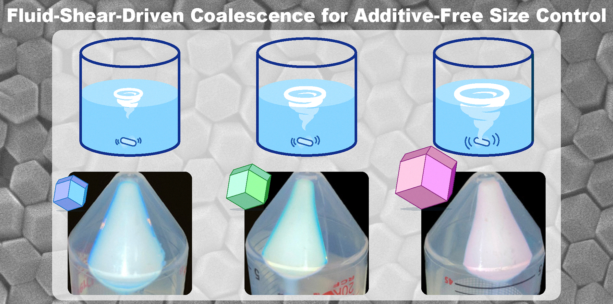
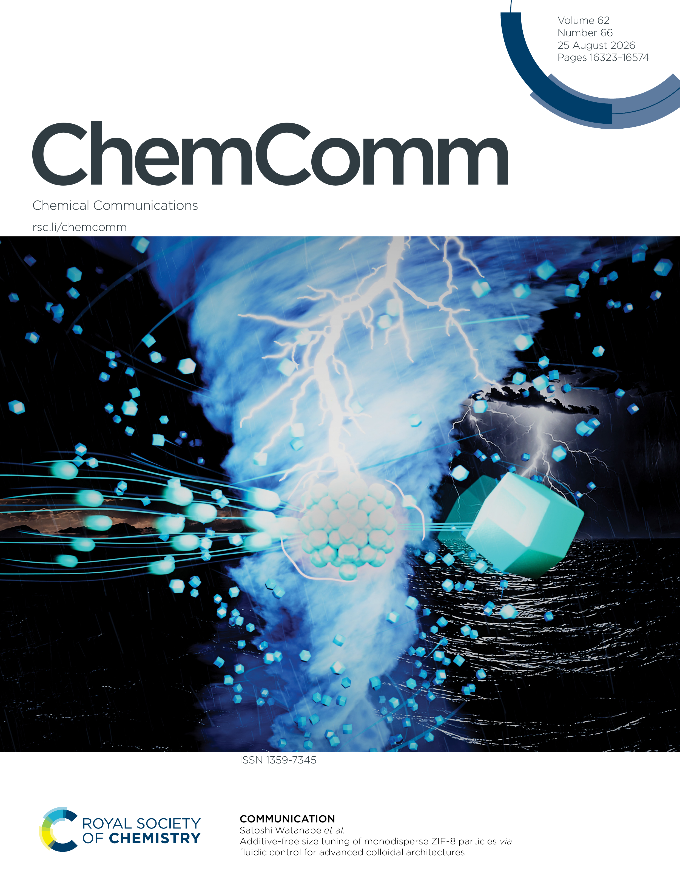
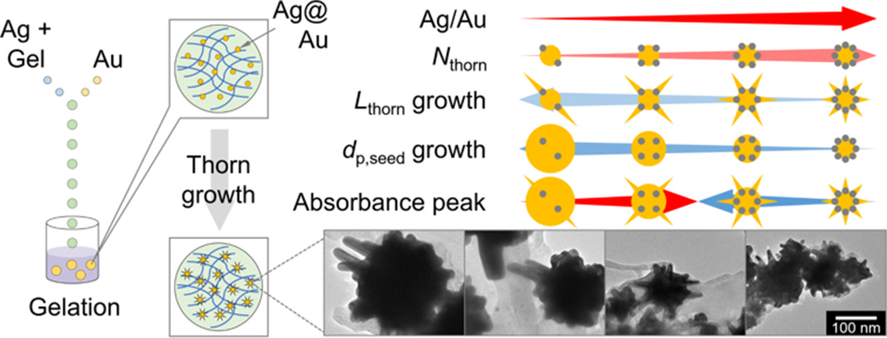
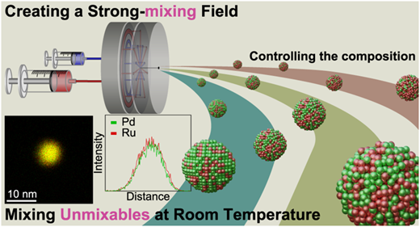

PUBLICATION
Additive-Free Size Tuning of Monodisperse ZIF-8 Particles via Fluidic Control for Advanced Colloidal Architectures
Abstractの要約． 添加剤を用いない流体制御により単分散ZIF-8粒子を調整し，応答性コロイド結晶アーキテクチャーに必要な吸着能を維持できることを示しました。

TOC graphic.

Front Cover, Chemical Communications, 2026, 62(66).
Article DOI: 10.1039/D6CC04499AFront Cover DOI: 10.1039/D6CC90283A
PUBLICATION
Production of Gold Nanoparticle-Containing Chitosan Microcapsules Using an Inkjet Mixing System and Control of the Absorption Wavelength
Abstractの要約． インクジェット混合でキトサン液滴内の金前駆体を還元・ゲル化し，Auナノ粒子含有マイクロカプセルを作製しました。粒子均一性・封入効率・耐酸性のトレードオフを比較し，ウニ状Auナノ粒子の棘成長条件により吸収ピークを制御できることを示しました。

TOC graphic.
Article DOI: 10.1016/j.cej.2026.174028
PUBLICATION
Room-Temperature Flow Synthesis of Pd–Ru Solid-Solution Alloy Nanoparticles Using Microreactor and Catalytic Performance of Carbon Monoxide Oxidation
Abstractの要約． 高混合性能のマイクロリアクターによる室温水溶液合成で，均一な組成・サイズのPd–Ru固溶合金ナノ粒子を形成しました。Ru量による局所構造の乱れにより，従来より低いPd組成でCO酸化活性を最適化できることを示しました。

TOC graphic.
 Supplementary Cover Art, Chemistry of Materials, 2025, 37(13).
Supplementary Cover Art, Chemistry of Materials, 2025, 37(13).
Article DOI: 10.1021/acs.chemmater.5c00747